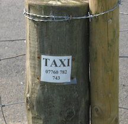

An American Walking in Britain
Mar 7, 2017 · CommentsBritish-Walking
Since retiring in 2011, I have been on a binge of walking in the UK. I will try to offer some tips based on lessons I have learned. I doubt this would be of any use to someone raised in the UK. Much of what I would say here would be obvious or second nature. But lots of things weren’t obvious to me as an American and therefore a foreigner unfamiliar with the British countryside.
As an example right at the outset, compare the words “hiking” and “walking”. In the US we use the word “hike” a lot. My impression is that “hiking” is not the usual term in England. Instead one refers to “walking”. In America, “walking” implies a short ramble. In the UK one has the hard-core Long Distance Walkers Association. Their idea of a good time starts with about 50 miles. Or a more human-scaled example would be The Walking Englishman web site, a great source of information. In these notes and tips I will try to use English terminology (based on my imperfect knowledge) and so I will refer to “walking” rather than “hiking”.
Why Walking in Britain
More than once while chatting with a local walker on the top of some barren fell, 1 I have been asked why I have come all the way to England to do my walking. Surely there is plenty of opportunity back in the US. What about the Appalachian Trail? Good question. On a number of multi-mile trudges across boggy moorland I have had plenty of opportunity to think about it.
The UK has a great infrastructure for walking, both short and long distances.
 One frequently see the ubiquitous “public footpath” finger posts marking some local public right of way. These footpaths originated as actual transportation routes.
There must have been quite a bit of that in colonial New England as well.
I don’t know the legal and cultural circumstances that caused those right
of ways to be preserved in the UK. In modern times, the powerful Ramblers Association functions somewhat like
the National Rifle Association, except for walking rather than guns. The Ramblers
lobby for legislation favorable to walkers and actively police existing
rights of way.
One frequently see the ubiquitous “public footpath” finger posts marking some local public right of way. These footpaths originated as actual transportation routes.
There must have been quite a bit of that in colonial New England as well.
I don’t know the legal and cultural circumstances that caused those right
of ways to be preserved in the UK. In modern times, the powerful Ramblers Association functions somewhat like
the National Rifle Association, except for walking rather than guns. The Ramblers
lobby for legislation favorable to walkers and actively police existing
rights of way.
In the US hiking routes are associated with wilderness or less desirable land that is away from populated areas. In the UK, because many paths grew out of transportation routes, they often go from village to village. One consequence of that is that in the US one has long distance routes such as the Appalachian Trail or the Pacific Crest Trail that emphasize being in the wild and require camping. If wilderness is what you are after, long-settled England is not the place to find it. One might refer to the wild coast of Cornwall on the South West Coast Path, but one is never very far away from a farm or a village. One can feel far from the madding crowd in national parks such as Dartmoor or Exmoor. It does feel a bit wild and isolated. But wilderness is not the word that describes it.
For an urbanized senior citizen such as myself, the creature comforts available in the UK are a big attraction. Even on the long distance routes one can walk from
village to village and stay in a cozy B&B, pub, or small hotel at the end of the day. One starts the day with a full English breakfast and follows a full day
of walking with a hot shower, a solid evening meal in the local pub, and finally
a comfortable bed (we hope). The type of walking I do in the UK is
fundamentally different from the Appalachian Trail. Plus there are no
bears or mountain lions or rattlesnakes to trouble my calm reflections
during the walk.
Another plus is public transportation, even away from cities and towns. If one wants to do a simple walk, it is often possible to take bus out somewhere and walk back to your hotel. Here in Connecticut where I live, there is a very nice set of trails (the Blue Blazed Trails), but almost none of them are near bus routes or motels or places to get food. Invariably one has to drive to a trail head. That’s true for many foot paths in the UK as well, but there are also many that are available via public transportation.  A couple of times I have decided to cut the day short and catch a bus for the rest of the trip. Sometimes there are even simple ferries to get you across an estuary. And even in rural areas there often is some sort of tax service available.
There are other aspects of the UK that probably make a difference. There is less suburban sprawl and less dependece on cars. In my part of the world one does not expect to find a motel or hotel anywhere except in a city or near a highway exit. In the UK B&B’s and small-scale hotels seem more plentiful. I don’t claim to understand all the political, cultural, and legal factors that create those differences in the environment. But the result is good for walkers.
All in all, walking in the UK seems to be a much more visible and popular activity than hiking is in the US. There are TV shows, books, guides, and maps in far greater volume than in the US. Alfred Wainwright seems to be regarded as the the key figure in the modern popularity of walking in Britain, especially the Lake District. He basically invented the route for the Coast to Coast Path, which is one of the most popular routes even though it is not one of the offical National Trails. There is a popular series of BBC programs by Julia Bradbury describing Waintwright’s fell walks. The original Wainwright guide books are now somewhat out of date, but his enthusiasm is contagious and his drawings are quite charming. If your local public library has a copy, take a look.
I’ll mention one other factor about the English landscape: sheep. I like sight lines. I enjoy walking through woods now and again, but I’m not so big on a full day of it. I like to get out in the open and see a long distance. In the American West, desert or altitude clear away the trees and give the hiker an unobstructed view. I like that kind of walking. In ancient times Britain was covered in forests. (Well, maybe not completely covered.) In large swaths of Britain the land is kept clear of trees by grazing animals, primarily sheep. Sometimes one will see a small stand of trees protected by an old stone wall enclosing the grove. There are lots of wooded areas in the UK and perhaps I’m overstating things a bit. But I associate areas like North Yorkshire with rolling green hills clear of trees. In Connecticut a long walk invariably involves a walk in the woods.
Types of Walks
The first trip I took to England was planned as a car trip around North Yorkshire. But I quickly realized that if I went to the local tourist information center (TIC) there often was information about some local walks. I ended up doing a number of half-day walks, including two that lay the ground work for an enduring interest in walking in Britain. So mixing car touring with walking is an entirely reasonable way to go. One one trip in Wales I arranged to stay for two nights in each of three places. That often worked out to be a half day walk on the day I arrived and then a full-day of walking before staying the second night. I started out with a two days in Wotton-under-Edge and a full-days’s walk on the Cotswold Way, two days in St. Davids in Wales and the Pembrokeshire Coast Path and then two more nights in the northern half of Wales. There are lots of areas where one could do something like that. With a bit of planning, one could do something like that via bus or train and avoid the car entirely (a big plus if one has qualms about driving on the left side of the road).
Tour Companies
There are many companies that arrange walking holidays. 2 I used Sherpa for a self-guided tour on the West Highland Way. There are many others. A “self-guided”” tour means that they will organize a route and accomodations, provide you with a map and directions, and usually also arrange to transport your luggage. Guided tours mean that you walk with a group. The only group tour I have done was an REI tour in the United States walking rim to rim across the Grand Canyon. I can’t claim to have any expertise about organized tours. It’s a definite possibility, and well worth your consideration. Just google “walking” and “britain” or “England” or “Scotland” and you will find a lot of options. An organized tour is a good way to get started.
There are also walking holidays that are organized out of a particular inn. You stay there for a period of time and each day your hosts arrange transportation to and from a walk for that day. This is not something I have any experience with.
Camping
Although I’ve made it clear that camping is not my cup of tea, plenty of people do make there way along the long-distance trails in Britain camping in much the same way as Americans on the Appalachian or Pacific Coast Trails. Agan it’s not something I know anything about so I won’t do anything beyond acknowledging that it is a popular possibility.
Multi-day Walks
After doing the Sherpa-organized walk on the West Highland Way (almost twenty years ago) I thought to myself that I could arrange that myself. And that’s what I have been doing. What I am hoping to do in these posts is to share some practical advice on doing a multi-day walk in Britain. Does it seem as though I am deliberately mystifying the whole process? Not at all. The point I hope I have made is that there are lots of things in Britain that come together to make a walking trip easy and satisfying. And there is tons and tons of information available. Like all travel activity, the web provides lots of ways to get useful information. But if you are contemplating a trip on one of England’s National Trails or other trails such as The Coast to Coast Path or the West Highland Way, buy a guide book. Trailblazer seems to dominate the market, at least for some trails in Britain. I have used a bunch of Trailblazer guides. They have a similar style and organization although different authors. They are loaded with very practical information including details about route, accomodations, and services. They include useful hand drawn maps of the route. Often you can find them on Amazon or other site in the US, but you can also order them directly from Trailblazer. I just checked their web site and I am shocked to see that they seem to offer free shipping world wide. Of course there are other guide books available as well.
What Next?
So much for general introduction. Next I will try to address particular topics. Here’s the plan. Next step will be for me to fill this in.
- Choosing a path
- Planning an itinerary
- Money
- Arranging for accommodations
- Luggage transport
- Food
- What to bring
- Packing
- Navigation
- Rain (and how to cope)
- Training, Fitness, and Foot Care
- Safety
- A “fell” is a term primarily used in northern England or Scotland for a hill top. Often appears in place names such as Cross Fell. See also fell running. [return]
- More language issues: they say “holiday” where we say “vacation”. [return]